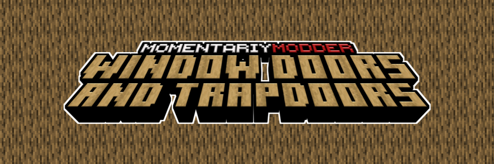

<!--
 Quara Theme by OllieJW (https://olliejw.me)
 License - https://olliejw.me/tos
-->

<!DOCTYPE html>
<html lang="en">
<head>
  <link rel="icon" href="../img/favicon.png">
  <title>Window Doors and Trapdoors | Project | MomentariyModder</title>
  <meta name="viewport" content="width=device-width, initial-scale=1, maximum-scale=1" />
  <meta name="title" content="MomentariyModder">
  <meta name="description" content="Hi, this is the official website of MomentariyModder!">
  <meta name="keywords" content="Minecraft, Mods, MomentariyModder">
  <meta name="theme-color" content="#4bb4f1">

  <!-- Edit this to change staff cards! -->

  <!--
	Notice:
	When you make changes to config,
	add ?v and a random number to config.css/js
	Example: <link rel="stylesheet" href="config.css?v=100">
  -->

  <script src="https://code.jquery.com/jquery-3.3.1.min.js"></script>
  <script src="https://cdn.jsdelivr.net/npm/handlebars@latest/dist/handlebars.js"></script>
  <script src="https://mcapi.us/scripts/minecraft.min.js"></script>
  <script src="../js/main.js"></script>
  <script src="../config.js"></script>
  <script src="../js/lightbox.min.js"></script>

  <link rel="stylesheet" href="https://cdnjs.cloudflare.com/ajax/libs/font-awesome/6.4.0/css/all.min.css"/>
  <link rel="stylesheet" href="../css/style.css">
  <link rel="stylesheet" href="../config.css">
  <link href="css/lightbox.css" rel="stylesheet" media="all">

</head>


<body>

  <div id="target"></div>

  <script id="template" type="text/x-handlebars-template">

  <header>
    <div class="hero" id="hero">
      <a href="#!"><h1 style="padding-top: 3%;"></h1></a>
    <p> </p>
    <div class="news-card" align="center">
	  <a href="../" class="lang btn" key="about"><i class="fa-solid fa-house"></i> Home</a>
      <a href="../wiki.html" class="btn"><i class="fa-solid fa-book"></i> Wiki</a>
	  <a href="#links" class="btn"><i class="fa-solid fa-share"></i> Links</a>
    </div>
	<p> </p>
	</div>
  </header>
  
  <section class="dark" id="projects">
	<h1><i class="fa-solid fa-list-ul"></i> Project</h1>
	<div id="news">
    <div class="news-card">
      <p align="center" style="color:#fff">
	    
	  </p>
	  <p align="center" style="color:#fff">
		
		
		<a href="ma.html"></a>
      </p>
	  <p align="center" style="color:#fff">
        
	  </p>
    </div>
	<p> </p>
	<div class="news-card">	
      <p>
	  Doors and trapdoors with glass appear in the game.
	  <br>
	  To craft doors or hatches, glass panels are needed. Then, in the smithing table, it is necessary to connect the door or hatch from the glass panel.
	  </p>
    </div>
	<p> </p>
	<div class="news-card">	
      <p align="center" style="color:#fff">The textures are based on:</p>
	  <p align="center" style="color:#fff">
	  <a href="https://www.curseforge.com/minecraft/texture-packs/glass-doors">Glass Doors(by ItsKobro)</a>
	  <br>
	  <a href="https://www.curseforge.com/minecraft/texture-packs/glass-doors">Glass Trapdoors(by ItsKobro)</a>
	  </p>
	  <p align="center" style="color:#fff">
	  <i>P.S.</i> The author of the mod has the right to use these resource packs. (<a href="https://www.curseforge.com/linkout?remoteUrl=https%253a%252f%252fraw.githubusercontent.com%252fMomentariyModder%252fbranding%252fmain%252fsites%252fpermissions%252fcd_and_ctd.PNG">Proof</a>)
	  </p>
    </div>
	<p> </p>
	<div class="news-card">	
	  <p align="center" style="color:#fff">
	   <strong>Download</strong>
       <a href="https://www.curseforge.com/minecraft/mc-mods/window-doors-and-trapdoors"></a>
       <a href="https://modrinth.com/mod/window-doors-and-trapdoors"></a>
   	   <a href="https://github.com/MomentariyModder/release/tree/main/Closed/WindowDoorsandTrapdoors"></a> 
	  </p>
    </div>
    </div>
	<div class="feature center">
	<a href="../" class="btn2">◀ Back</a>
	</div>
  </section>
  
  <section class="light">
    <h1><i class="fa-solid fa-share"></i> Links</h1>
    <div id="links" align="center">
	  <a href="https://discord.com/invite/9XqgjRd"></a> 
	  <a href="https://twitter.com/momentariymoder"></a>	 
	  <a href="https://www.curseforge.com/members/momentariymodder"></a> 
	  <a href="https://modrinth.com/user/momentariymodder"></a> 
	  <a href="https://github.com/MomentariyModder"></a>
	  <a href="https://patreon.com/momentariymodder"></a>
	  <a href="https://boosty.to/momentariymodder"></a>
    </div>
  </section>
  
  
  <footer>
    <a>&copy; 2019-2023 {{server_name}}. All Rights Reserved.</br>{{server_name}} is not affiliated with Mojang Studios, nor are its projects official Minecraft projects.<br>{{server_ip}}</a>
	<a></a>
	
  </footer>
  </script>
  
</body>
</html>